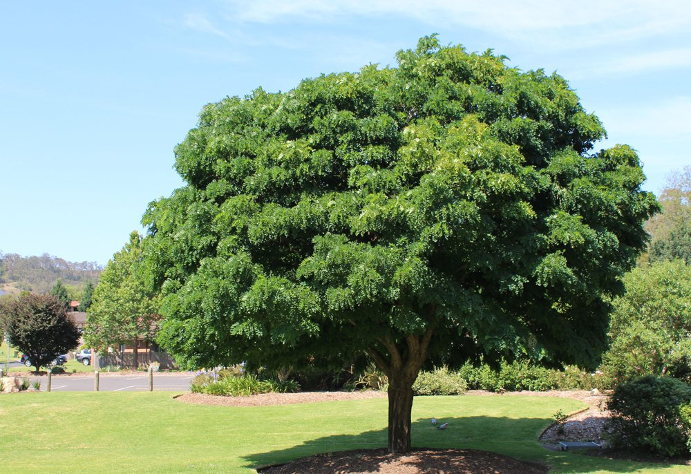

ESCLAVOS DIGITALES

Por: Omar Barrientos
Fecha: 09/07/2021
Desde temprana edad, a los niños, sus progenitores les prestan y después le compran teléfonos celulares y los infantes se concentran en lo que ven y les dicen por esos artefactos.
La dejación de sus relaciones familiares y sociales; un desarrollo incompleto que no los deja pensar y una adicción a su uso constante, son daños ocasionados en las inmaduras mentes infantiles y también de algunos adultos. Esta adicción, los prepara como futuros esclavos digitales, cuando como adultos deban trabajar. Alejados de los libros, periódicos e incluso de la radio y televisión serán convertidos en fieles creyentes de las llamadas redes sociales y en esclavos digitales, en cuyo desarrollo confían los capitalistas imperiales y muchos criollos.
De acuerdo al “The New York Time”, “la educación digital es solo para los pobres y los estúpidos”. Los más ricos del mundo en Silicon Valley de Estados Unidos, envían sus hijos a escuelas sin implementos digitales y los crían alejado de celulares y cualquier adminículo similar. Para sus hijos prefieren los juegos entre ellos, su interrelación social directa, humana, con abundante lectura de libros y desarrollo de su pensamiento y destinan la educación digital para las clases medias y bajas, estimulando la formación de una nueva forma de esclavitud, recibiendo mensajes y orientaciones a través de esos medios.
LLUVIAS PARA LA AGRICULTURA URBANA
Por: Omar Barrientos
Fecha: 18/05/2021
- Si no hay por la tubería, cómo regamos los cultivos, preguntaba una vecina al facilitador de agricultura urbana, cuando con la comunidad, organizaba un conuco en los alrededores del urbanismo.
En ese momento otro vecino tomó la palabra y dijo:
- Usemos agua de lluvia, hagamos un sistema para tomarla del drenaje de aguas blancas y llene un tanque desde donde la podamos utilizar.
- Buena idea, pero deben asesorarse con ingenieros de la misión. Por mi parte haré todo lo posible para ayudar, ripostó el facilitador.
Todos estuvieron de acuerdo. Con sonrisas y aplausos dieron la bienvenida a la decisión.
MÁS ÁRBOLES, MENOS CEMENTO

Por: Omar Barrientos
Fecha: 21/06/2021
La misión Venezuela Bella, junto a la alcaldía de Caracas, realizan bacheo de calles y aceras; frisado y pintado de muros en autopistas y avenidas; arreglo de canchas deportivas y plazas; eliminación de botes de agua; limpieza de drenajes y quebradas y pare de contar, todo lo dejarán lista para el bicentenario de la batalla de Carabobo, el cercano 24 de junio, anunciaba un periodista en la televisión.
- Eso me parece muy bien, pero en varias avenidas han terminado de arrancar tocones de troncos y encementado los huecos en cambio de sembrar nuevos árboles, sobre todo frutales, comentaba la señora Ligia a su vecina Gloria, quien le respondía:
- Tienes razón, hace falta la intervención de las misiones Árbol y Agricultura Urbana para poner las cosas o mejor las matas en su lugar.
- No creo que eso sea lo importante, los jefes de los trabajos deben tomar conciencia, tal como lo señalaba el comandante supremo Chávez y lo predica el presidente Maduro. Máxime cuando se anuncia la siembra de miles de granados por toda la capital.
MATRMONIO GAY O…
Por: Omar Barrientos
Fecha: 24/04/2021
El homosexualismo se ha convertido en un tema del día. Tanto favor como en contra e incluso se plantea el matrimonio entre personas del mismo sexo.
Los derechos de las personas lesbianas, bisexuales, gay y transexuales, se han convertido en la lucha principal de organizaciones LBGT y tienen razón en reclamarlos y los estados la obligación de respetar su práctica, en toda persona que como adulta se decida por ese camino, aun cuando la naturaleza estableció los sexos femenino y masculino, como única forma de realizar la reproducción de las especies animales superiores y de algunos vegetales.
En consecuencia, hasta el momento, cuando la clonación no ha pasado de la experimentación científica y con prohibición de ser aplicada en los humanos, el contacto sexual hombre-mujer es exclusivamente el sistema para lograr la reproducción.
En algunos países se ha aprobado el matrimonio homosexual como si fuese una gran reivindicación, muchos integrantes de la comunidad gay desean lo mismo en el resto del mundo, incluido nuestro país, pero la Constitución de la República Bolivariana de Venezuela en su artículo 77 se refiere al matrimonio entre un hombre y una mujer, el cual iguala a la unión estable o concubinato, donde se pudiera concluir: Lo adecuado no es autorizar el matrimonio homosexual, sino eliminar el otro, y de tal manera acabar con el divorcio.
MVV Y AGRICULTURA URBANA, BUENA LIGA
Por: Omar Barrientos
Fecha: 21/04/2021
Gracias a la Misión Vivienda Venezuela, tres millones y media de familias tienen casa o apartamentos de 72 m2, con dos baños, tres cuartos, sala comedor cocina y demás, pero combinada con la misión Agricultura Urbana, se potencian las dos. Deben entrenarse y ayudar a sus habitantes al cultivo de vegetales y cría de animales.
Ponerles doble tubería, una para agua potable y otra para las de lluvia, para los servicios; especialmente en zonas altas, como la gran Caracas, adonde llega por un sistema complejo de bombeo; también sembrar árboles frutales – belleza natural, sombra y alimento-.
- En este urbanismo vamos a cultivar los terrenos aledaños, jardines y balcones con vegetales alimenticios. Dentro de poco obtendremos sus productos y más adelante los muchachos tendrán sus mangos, guanábanas, mandarinas y otras frutas…Exponía un vocero del consejo comunal.
- Claro los viviendo venezolanos seremos también agricultores urbanos, comentaba en tono afirmativo, otra vecina.
VIENEN LAS MAQUILAS
Por: Omar Barrientos
Fecha: 19/05/2021
- En esa ley de las Zonas Económicas Especiales, debemos introducir cambios beneficiosos para nuestros negocios, como exoneración del pago de impuestos; régimen laboral de maquilas, para pagar poco y producir bastante y facilidad de sacar nuestras ganancias del país. La gente de Venecham también muy de acuerdo está, comentaba un directivo de Fedecámaras, con el diputado de la oposición.
- Por parte nuestra cuente con esa opción, pero necesitamos más grasa verde para pasársela a varios diputados rojos rojitos y poderlos convencer.
- Para eso estamos haciendo un pote grande, ya de USA algo nos mandaron, diciéndonos que si necesitamos más, solo debemos pedirlo, pero quieren resultados positivos.
CIUDADES COMUNALES

Por: Omar Barrientos
Fecha: 10/06/2021
Una Ley de las Ciudades Comunales es un acierto. Serán asiento del poder popular. Son la suma de las comunas –suma de los consejos comunales- y algo más. Dotadas de todas las posibilidades de desarrollo propio, han de definir su vocación económica, educativa, cultural, de salud, de seguridad, etc.
Las ciudades comunales, pilar fundamental del desarrollo socialista, bolivariano y chavista, deben transferir competencias del hacer, pero sobre todo de planificar y dotadas de presupuesto e ingresos propios echen adelante su destino, imbricado con la participación del ciudadano de hacer y decidir por medios asamblearios y convertir en realidad, la democracia directa, participativa y protagónica.
- Aun cuando es temprano vaticinar, pues la Ley está en la Asamblea, es importante opinar, manifestaba Úrsula a su vecina, quien le decía:
- La ciudad comunal supera la unidad administrativa municipio y nos acerca la toma de decisiones, problemas a superar, necesidades y planes para su crecimiento. Somos sus habitantes, quienes debemos fijar los programas y planes a desarrollar.